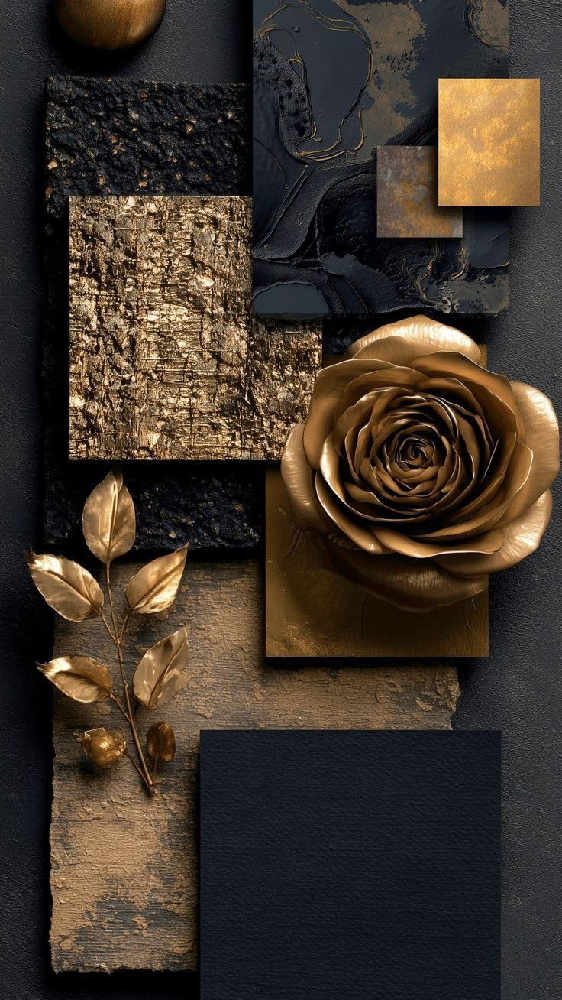

Material + Sample Boards · 15 Directions
Start with a look and feel.
Not sure which colours or finishes to bring together? These boards collect timber, stone, fabric, colour and texture ideas in one place, so you can compare directions before making decisions.

M
15 ideas to explore.
Each board focuses on a different mix of materials and colours. Use them as a starting point, save the combinations you like and share them when discussing your project.